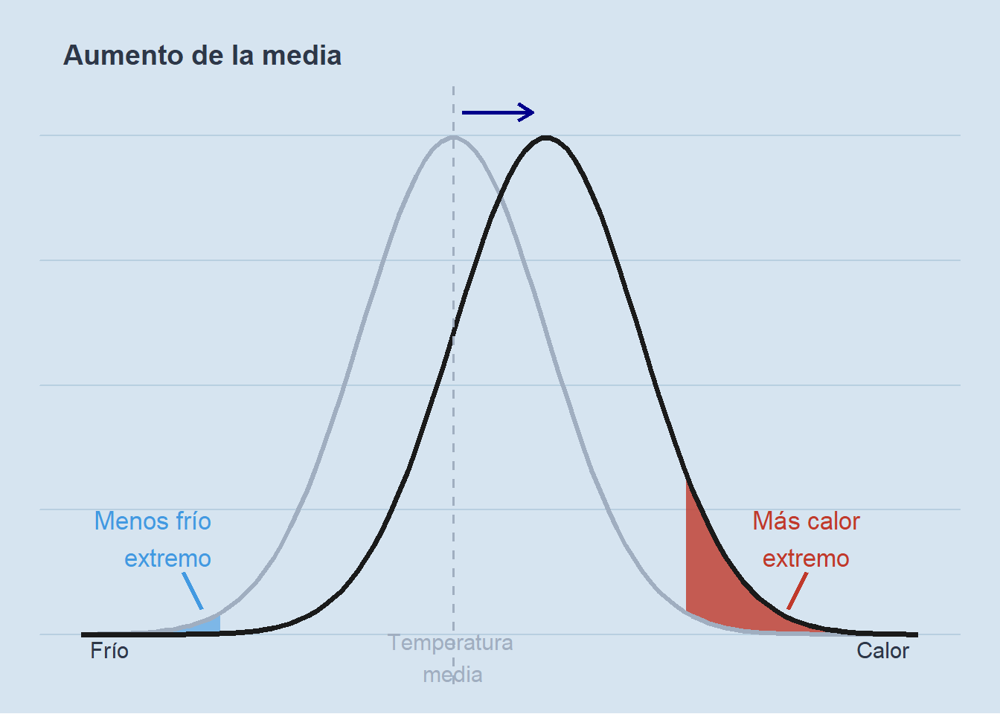

Mostrar código R
library(ggplot2)
library(dplyr)
# Parámetros
media_ref <- 0; sd_ref <- 1
media_new <- 1; sd_new <- 1
x_min <- -4; x_max <- 5
umbral_frio <- -2.5
umbral_calor <- 2.5
# Colores
col_fondo <- "#d6e4f0"
col_curva_ref <- "#a0aec0"
col_curva_new <- "#1a1a1a"
col_frio <- "#4299e1"
col_calor <- "#c0392b"
col_texto <- "#2d3748"
# Datos para áreas sombreadas
x_seq <- seq(x_min, x_max, length.out = 1000)
df_frio <- data.frame(x = x_seq) |>
mutate(
y_ref = dnorm(x, media_ref, sd_ref),
y_new = dnorm(x, media_new, sd_new)
) |>
filter(x <= umbral_frio, y_ref > y_new)
df_calor <- data.frame(x = x_seq) |>
mutate(
y_ref = dnorm(x, media_ref, sd_ref),
y_new = dnorm(x, media_new, sd_new)
) |>
filter(x >= umbral_calor, y_new > y_ref)
ggplot(data.frame(x = c(x_min, x_max)), aes(x)) +
geom_ribbon(data = df_frio,
aes(x = x, ymin = y_new, ymax = y_ref),
fill = col_frio, alpha = 0.6) +
geom_ribbon(data = df_calor,
aes(x = x, ymin = y_ref, ymax = y_new),
fill = col_calor, alpha = 0.8) +
stat_function(fun = dnorm, args = list(media_ref, sd_ref),
colour = col_curva_ref, linewidth = 1.2) +
stat_function(fun = dnorm, args = list(media_new, sd_new),
colour = col_curva_new, linewidth = 1.4) +
geom_vline(xintercept = media_ref, colour = col_curva_ref,
linetype = "dashed", linewidth = 0.6) +
annotate("segment",
x = 0.1, xend = 0.85,
y = dnorm(0, 0, 1) * 1.05,
yend = dnorm(0, 0, 1) * 1.05,
colour = "darkblue", linewidth = 1,
arrow = arrow(length = unit(0.3, "cm"), type = "open")) +
annotate("text", x = umbral_frio - 0.1,
y = dnorm(umbral_frio, media_ref, sd_ref) + 0.06,
label = "Menos frío\nextremo",
colour = col_frio, size = 4.5, hjust = 1) +
annotate("text", x = 3.8,
y = dnorm(umbral_calor, media_ref, sd_ref) + 0.06,
label = "Más calor\nextremo",
colour = col_calor, size = 4.5, hjust = 0.5) +
annotate("text", x = x_min + 0.1, y = -0.012, label = "Frío",
colour = col_texto, size = 4, hjust = 0) +
annotate("text", x = x_max - 0.1, y = -0.012, label = "Calor",
colour = col_texto, size = 4, hjust = 1) +
annotate("text", x = media_ref, y = -0.018, label = "Temperatura \nmedia",
colour = col_curva_ref, size = 4, hjust = 0.5) +
annotate("segment",
x = -2.9, xend = -2.7,
y = 0.05, yend = 0.02,
colour = col_frio, linewidth = 1.1) +
annotate("segment",
x = 3.8, xend = 3.6,
y = 0.05, yend = 0.02,
colour = col_calor, linewidth = 1.1) +
labs(title = "Aumento de la media") +
xlim(x_min, x_max) +
theme_void() +
theme(
plot.background = element_rect(fill = col_fondo, colour = NA),
panel.background = element_rect(fill = col_fondo, colour = NA),
plot.title = element_text(colour = col_texto, size = 14, face = "bold",
margin = margin(t = 12, l = 12, b = 8)),
plot.margin = margin(10, 20, 15, 20),
panel.grid.major.y = element_line(colour = "#b8cfe0", linewidth = 0.4)
)